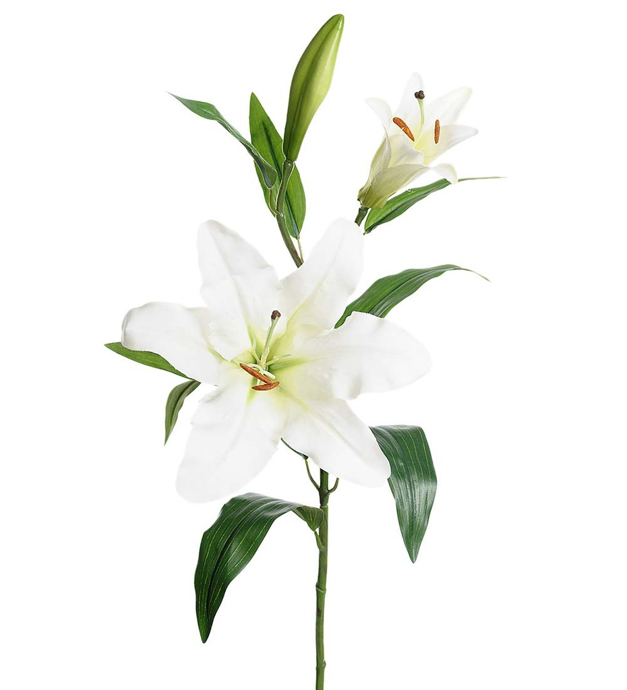

Liljat
• Liljat eivät tarvitse paljoa erityishoitoa
• Lämpiminä aikoina kastele liljoja kerran viikossa
• Liljat kestävät maljakossa 5–10 päivää
• Liljan kukat aukeavat parhaiten viileässä vedessä

• Liljat eivät tarvitse paljoa erityishoitoa
• Lämpiminä aikoina kastele liljoja kerran viikossa
• Liljat kestävät maljakossa 5–10 päivää
• Liljan kukat aukeavat parhaiten viileässä vedessä